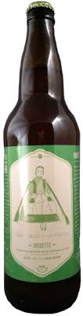

Dandy in the Underworld
5.5% ABV
The main Dandy. This beer is our most popular offering and available everywhere, all the time. A light
body with notes of coffee, chocolate, and light roast, this traditional Oyster Stout is sure to be a favourite.
Pairs well with oysters, fish, and other salty snacks!

Une Vieille Maitresse
4.5% ABV
This farmhouse ale is available year round in the bottle and draught. A table strength beer brewed with
rye and french saison yeast. It is light, refreshing, with a touch of spice and saison character. Brewed
once as a limited edition, we can't seem to shake this old mistress.
The Dandy Wild Sour Ale
7.3%
A bold, malty sour ale soured with lactobacillus and fermented with a wild yeast strain. An upfront
sourness is balanced with wild yeast character for a rich sour experience.
The Golden Brown Dandy
6% ABV
Our English Pale ale. This beer is a low-carbonation ode to real-ale. A smooth malt body is balanced with a highly intensive hops schedule to bring forward a great tasting beer to reward all ale lovers! Available
only in bottles and casks. Pairs well with meats, rich sauces and hard, aged cheeses.